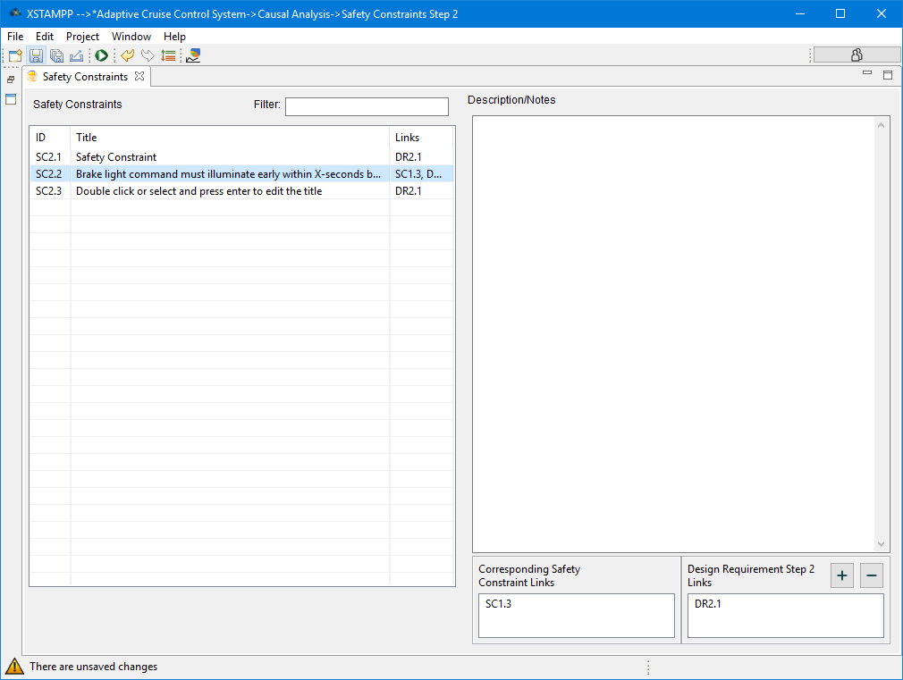

#-------------------------------------------------------------------------------
# Copyright (C) 2018 Lukas Balzer, Asim Abdulkhaleq, Stefan Wagner Institute of SoftwareTechnology, Software Engineering Group University of Stuttgart, Germany.
# All rights reserved. This program and the accompanying materials
# are made available under the terms of the Eclipse Public License v1.0
# which accompanies this distribution, and is available at
# http://www.eclipse.org/legal/epl-v10.html
#
# Contributors:
# Lukas Balzer, Asim Abdulkhaleq, Stefan Wagner Institute of SoftwareTechnology, Software Engineering Group University of Stuttgart, Germany - initial API and implementation
#-------------------------------------------------------------------------------
Safety Constraints of Step 2

In this editor all the safety constraints created for in the Causal Factors Table are listed. There are two kinds of safety constraints that can be listed here:
SC2.n
a Causal Factor Safety Constraint
a Safety Constraint defined in the Causal Factors Table to prevent the occurrence of an Unsafe Control Action in the context of a Causal Factor. A Safety Constraint can be linked to one or more Design Requirements to specify the concrete system design to implement the constraint. Additionally such a this kind of safety constraint can be linked to a Corresponding Safety Constraint if defined so in the Causal Factors Table
SSC2.n
a Scenario based Safety Constraints
a Safety Constraint defined for a specific scenario. A Safety Constraint can be linked to one or more Design Requirements to specify the concrete system design to implement the constraint.
For details on how to use the common table interface please refer to the Common Table View